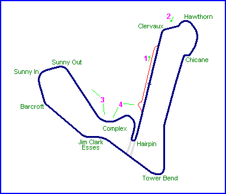
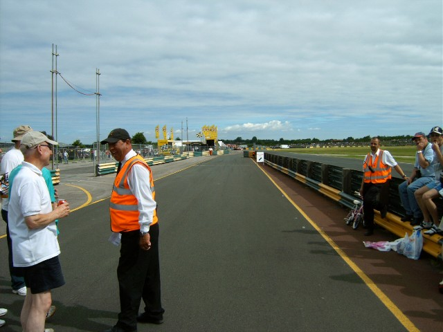
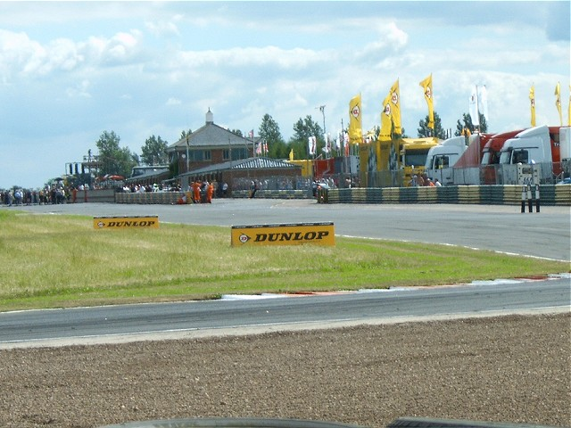
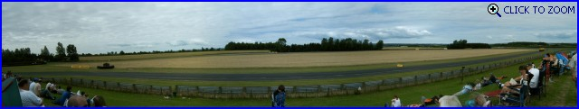
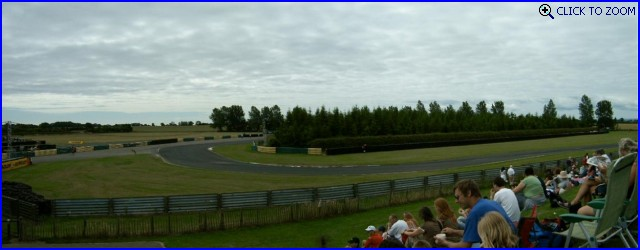

Croft, United Kingdom
Photographs Taken: 17 July, 2005

Click on the photos below to zoom in

1 - Pit exit

2 - From Clervaux, looking back to the pits
& paddock.

3 - Panoramic of the second half of the
circuit, from the Jim Clark Esses in the back-left, through Sunny In & Out to the far
right and in the foreground, the run down to the Complex. (246.3
kb - 2602x480)

4 - The Complex.
(109.9 kb - 1242x480)
Return to racingcircuits.net's Photo Archive Main Index
©2005 Daniel King / racingcircuits.net. All rights reserved.